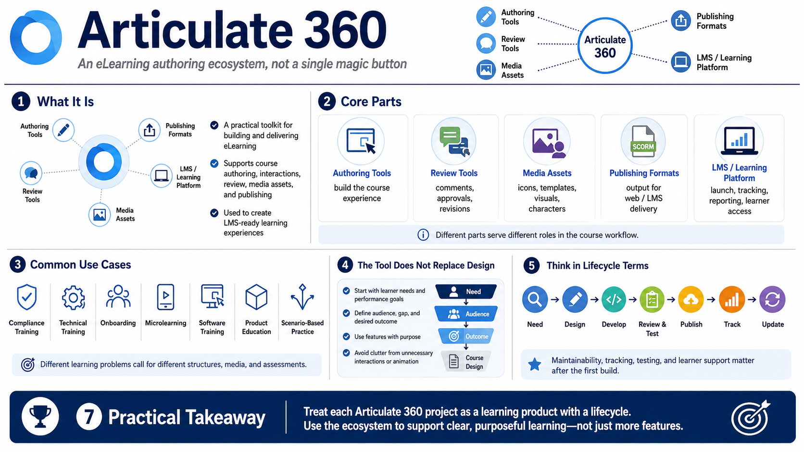

What Articulate 360 Is Used For
Connecting to LMS... Progress: in progress

Narration
Articulate 360 is best understood as an eLearning authoring ecosystem rather than a single magic button for training. It brings together tools for building courses, creating interactions, managing review, using media assets, and publishing learning content for online delivery. In a practical training team, that means one environment may support slide-based courses, responsive lessons, assessments, stakeholder review, and LMS-ready output.
It helps to separate the parts of the ecosystem. Authoring tools are where the course is designed and built. Review tools support comments, approvals, and revisions. Media assets provide starting points for visuals, icons, templates, and character-style elements. Publishing formats control how the course is delivered, while the learning platform or LMS handles launch, tracking, reporting, and learner access.
Common use cases include compliance training, technical training, onboarding, microlearning, software training, product education, and scenario-based decision practice. These courses may look very different from one another. A short policy refresher might need a clean responsive structure and a simple quiz. A software workflow course might need demonstrations and practice. A leadership scenario might need branching decisions and feedback.
The tool does not replace instructional design. Strong courses begin with a reason for learning, a learner audience, a performance gap, and a clear outcome. Features matter, but features without purpose can create clutter. The best Articulate 360 projects use the tool to support learning, not to show off every interaction or animation available.
A useful way to frame Articulate 360 work is to treat each project as a learning product with a lifecycle. It begins with a need, moves through design and development, passes through review and testing, and eventually needs updates. Thinking in lifecycle terms keeps the team from focusing only on the initial build and forgetting maintainability, tracking, and learner support.